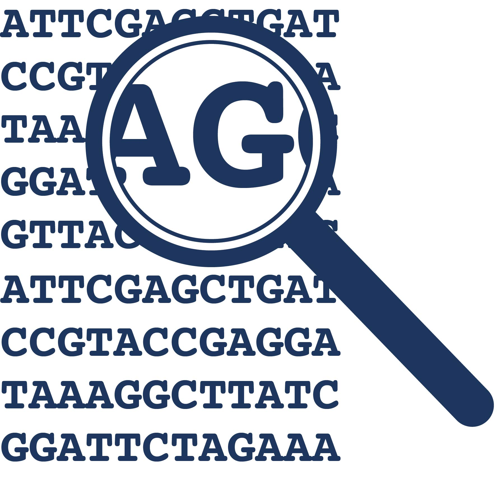
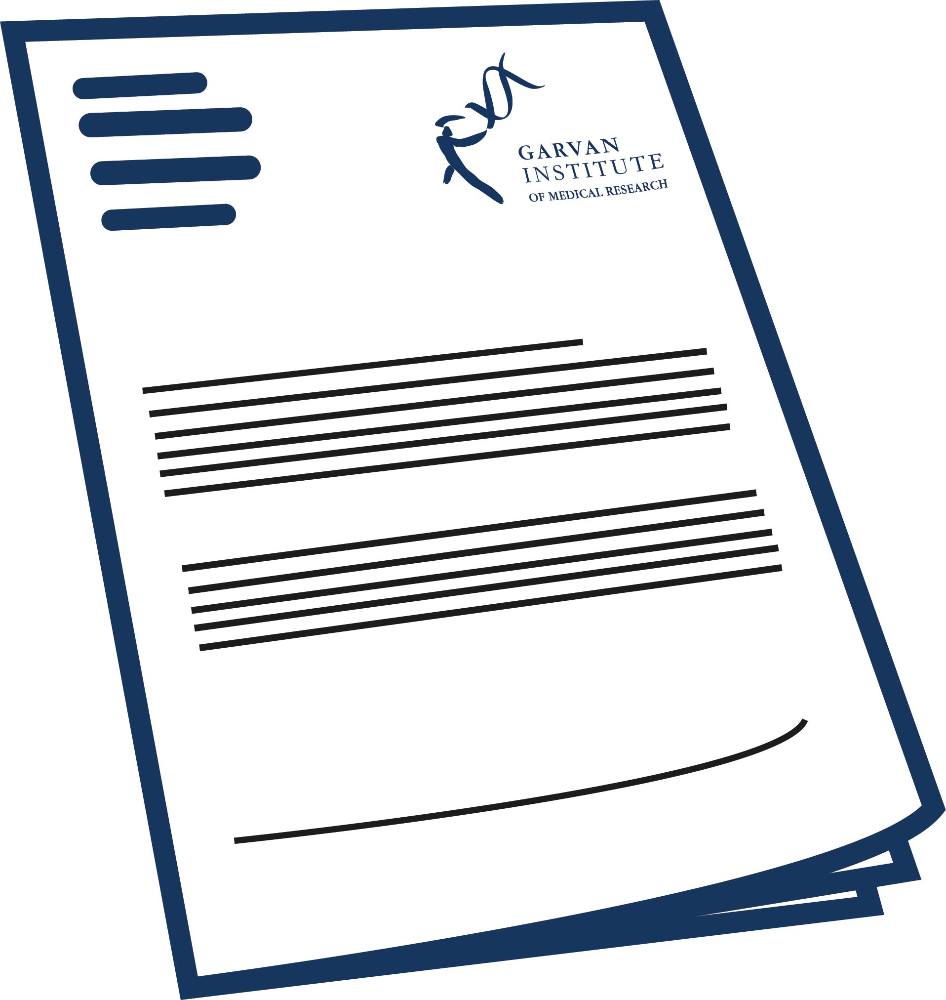

For patients
[G4 Pathology] uses clinical Whole Genome Sequencing (WGS) to identify causes of genetic disorders. WGS is a technology that analyses the DNA in most of our genes to find variations in our genome. WGS screening analyses most of your genes in the one test./p>
If you have any questions about this test or its suitability, please download our patient brochure [insert link to patient brochure] and talk to your doctor or one of our genetic counsellors by calling [insert patient liaison phone number]
What does the [G4 Pathology] Whole Genome Sequencing involve?
When your treating specialist requests a [G4 Pathology] Clinical Whole Genome Sequencing analysis, you will be asked to provide a sample of blood or DNA. Your sample will be analysed using advanced technology at our laboratory in Sydney, Australia. Genomic pathology is a specialist field of medicine and involves specialist genetic pathologists working with clinical genomic and scientific personnel to provide the highest quality interpretation of the human genome. You will find more information about WGS here [link to ‘What does whole genome sequencing do?’].
Your treating specialist will receive the results of the [G4 Pathology] Clinical WGS analysis in the form of a pathology report from a qualified [G4 Pathology] genetic pathologist.
How it works
Referral from your GP to a specialist
Firstly, talk to your GP and ask for a referral to a registered medical specialist who will be able to order WGS for you from [G4 pathology].
Counselling and consent
Your specialist will talk to you about your condition and how [G4 Pathology] WGS test may help to identify the genetic cause. She or he will also discuss with you the potential outcomes of the test and what that could mean for you and other family members.
You will be required to provide consent for WGS testing once you have decided to proceed.
[G4 Pathology] Clinical WGS is not covered by Medicare or private health insurances. Unless covered by a public hospital (please confirm with your referring specialist) you will be asked to pay the cost of the [G4 Pathology] WGS analysis before processing of your sample commences.
Blood sample sent to G4
At the end of the consultation your referring specialist will provide you with a request form. Take this form to your nearest pathology collection centre. They will be able to take a blood sample from you and send it together with the request form to [G4 pathology] to perform WGS.
DNA from sample sequenced

[G4 Pathology] will perform a WGS test using the DNA isolated from your blood in order to find variations in our genome. WGS analyses most of your genes in the one test.
DNA analysis

Genomic pathology is a highly specialized field of medicine. A genetic pathologist will work with clinical genomic and scientific personnel to analyse the data from WGS and provide the highest quality interpretation of your genome.
Your report is generated

The results and interpretation from WGS will be summarized in a final report, which will be sent to your specialist.
Discussing your results with your specialist

The timeframe for completion of WGS testing and the return of the results to your specialist is approximately 6 to 8 weeks. However, there may be variation in the time taken depending on factors such as workload and urgency. Once your specialist receives our report they will schedule an appointment with you and your family to discuss the findings.